QA visuelle — Wizard de création d'événement
Les maquettes Stitch décrivent un wizard à 5 étapes avec sidebar de
tableau de bord, assistant IA, étape billetterie et palette verte. Le produit livré est
un wizard à 6 étapes en plein écran, sur la palette V2, avec le modèle
Access V2. Ces rapprochements documentent donc un écart de spécification , pas
un écart d'exécution : voir report.md .
Étape 1 — Informations
Référence Stitch — « Informations générales » (étape 1 sur 5)
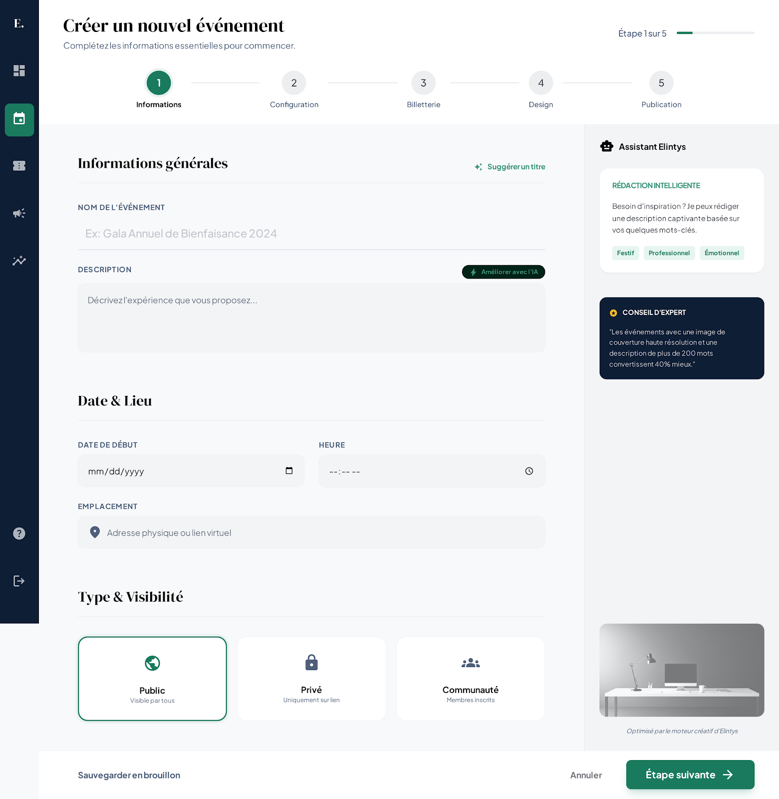
Implémentation — « L'essentiel » (étape 1 sur 6), 1538×1100
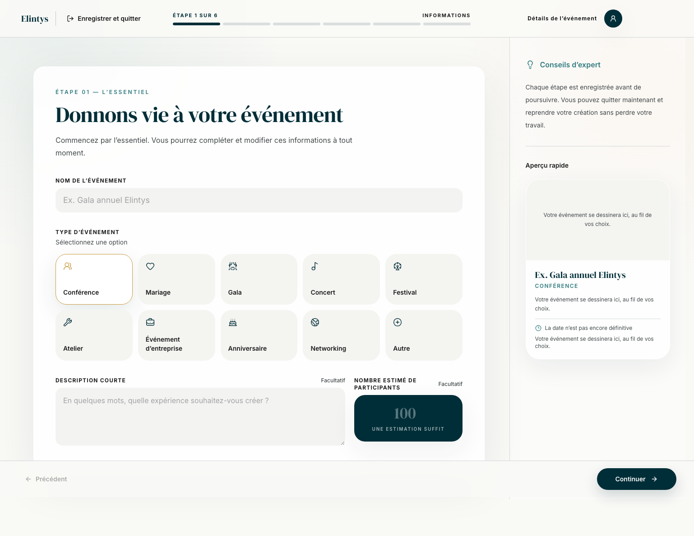
Étape 2 — Date et lieu
Référence Stitch — « Configuration » (étape 2 sur 5)
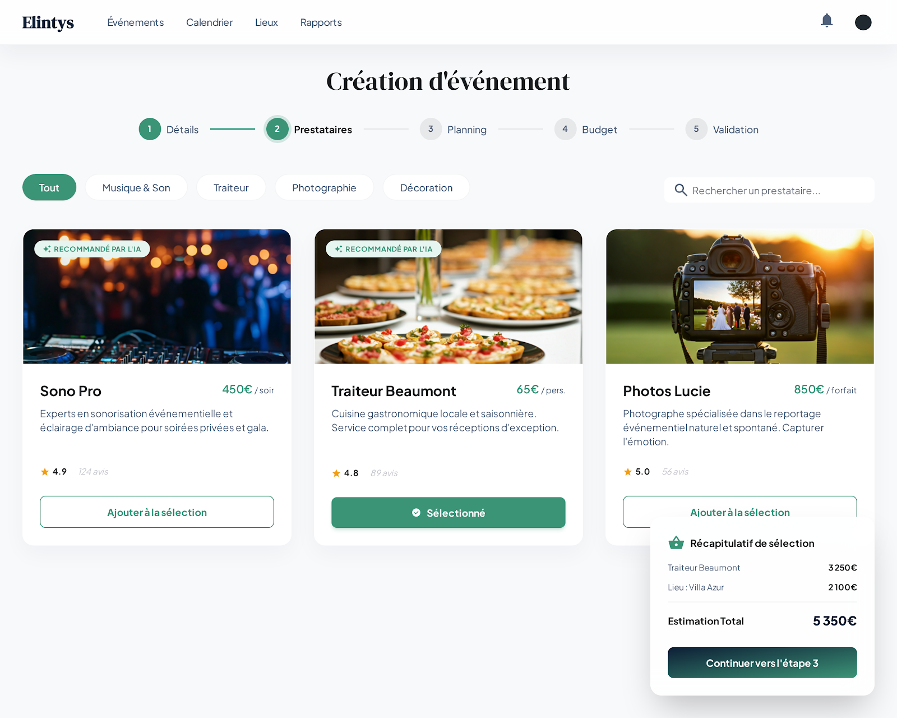
Implémentation — « Date et lieu » (étape 2 sur 6), 1538×1100
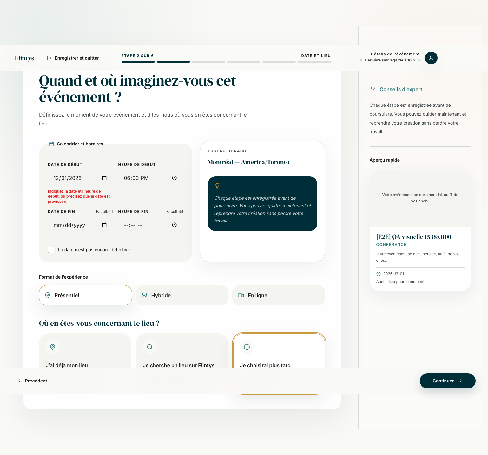
Étape 3 — Lieu
Référence Stitch — « Sélection du lieu », avec carte et tarification
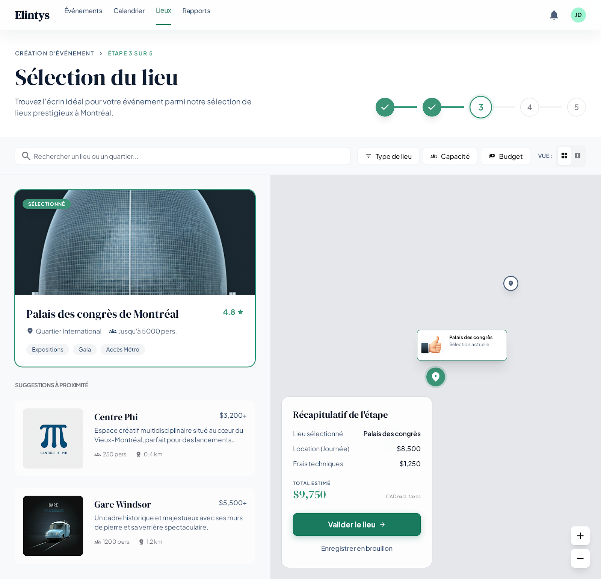
Implémentation — branche « je choisirai plus tard », 1538×1100
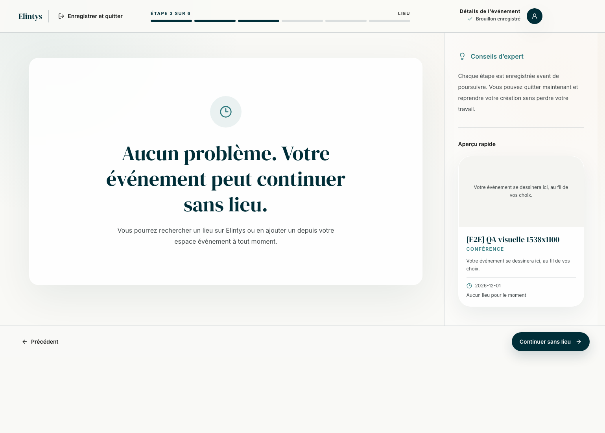
Étape 4 — Prestataires
Référence Stitch — « Design » (étape 4 sur 5)
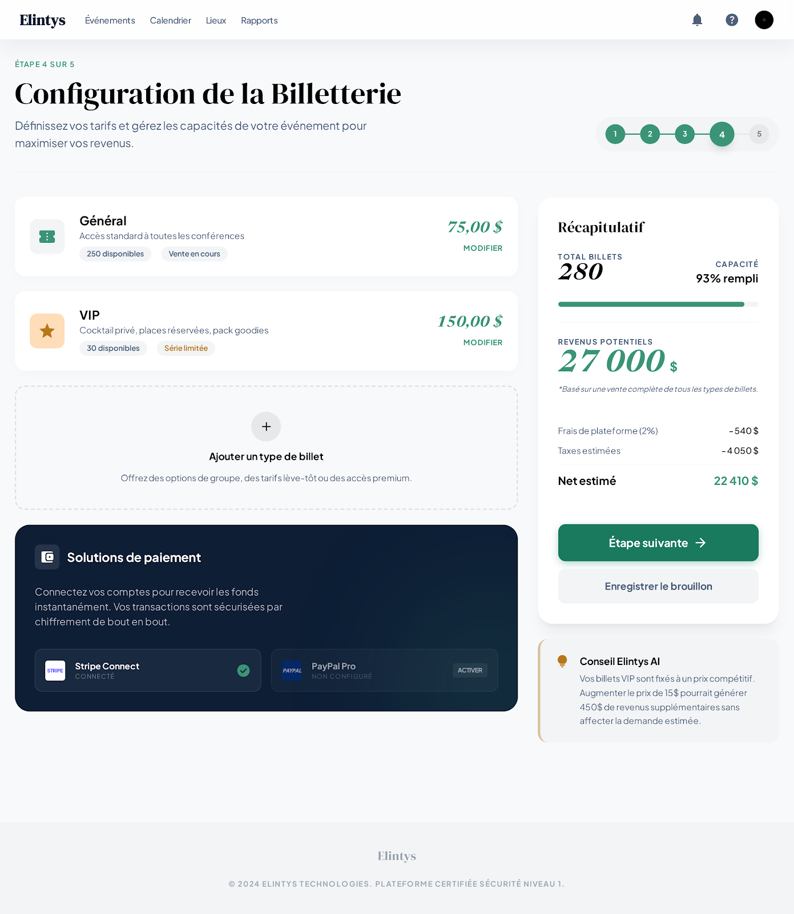
Implémentation — « Prestataires » (étape 4 sur 6), 1538×1100
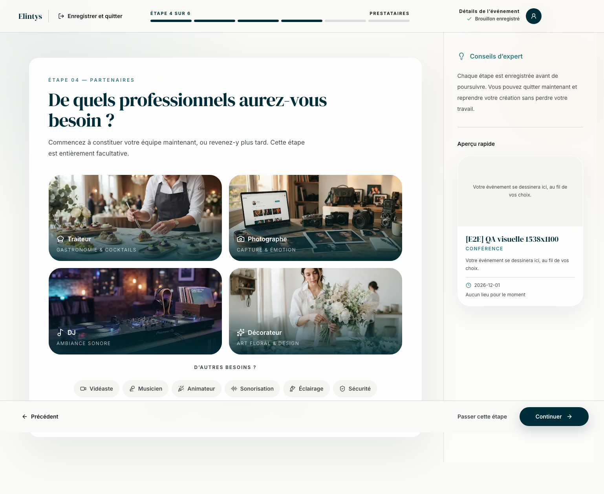
Étape 5 — Identité et accès
Référence Stitch — « Publication » (étape 5 sur 5)
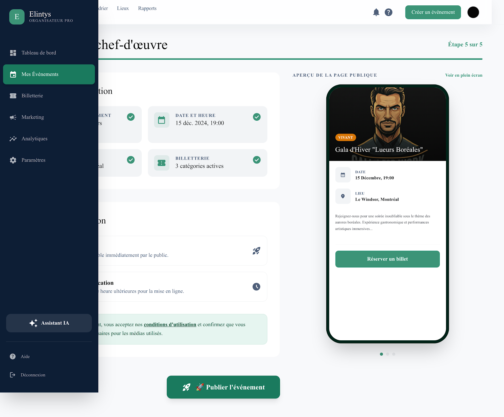
Implémentation — « Identité et accès » (étape 5 sur 6), 1538×1100
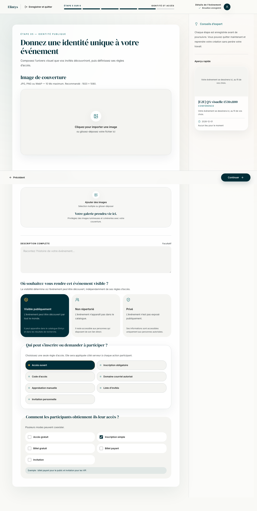
Étape 6 — Récapitulatif
Aucune maquette : les références s'arrêtent à l'étape 5.
Implémentation — « Récapitulatif » (étape 6 sur 6), 1538×1100
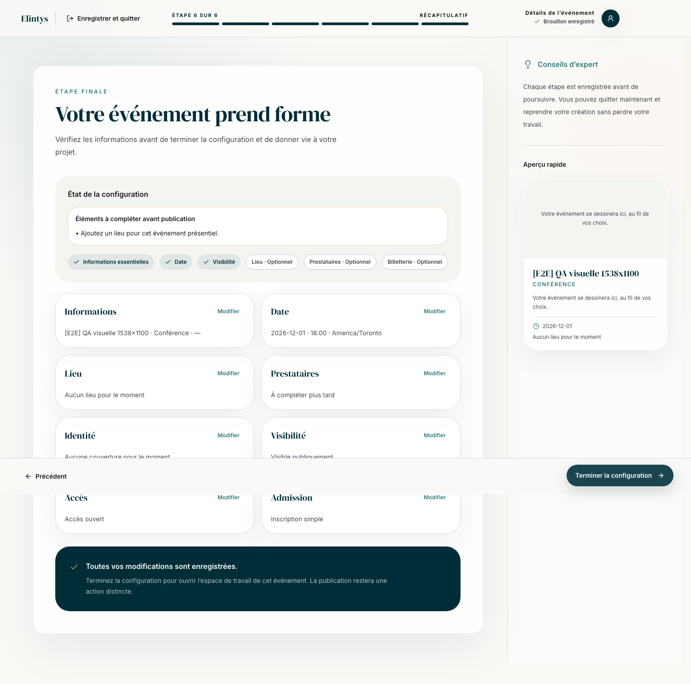
Mobile — 390×844
Aucune maquette mobile n'existe pour le wizard. Captures de référence pour la recette.
Étape 1
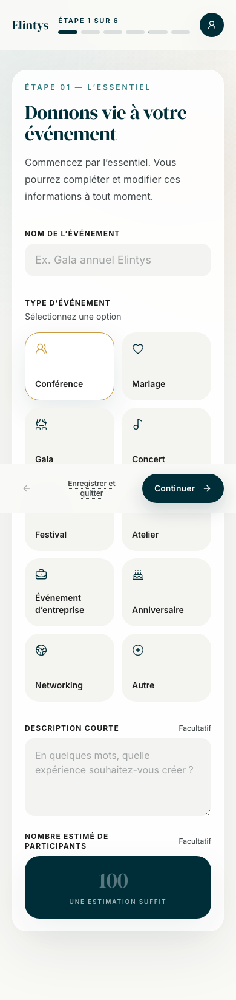
Étape 5
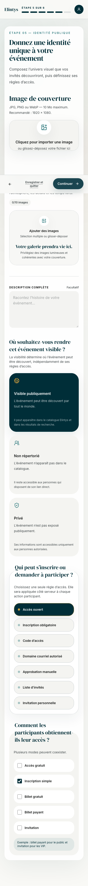
Étape 6
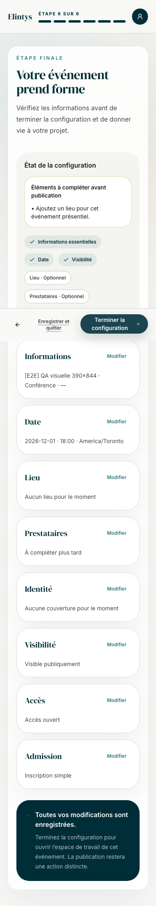